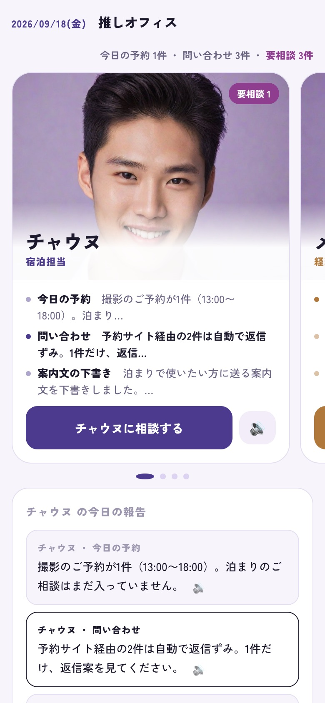
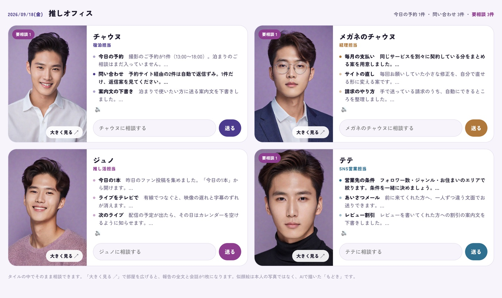
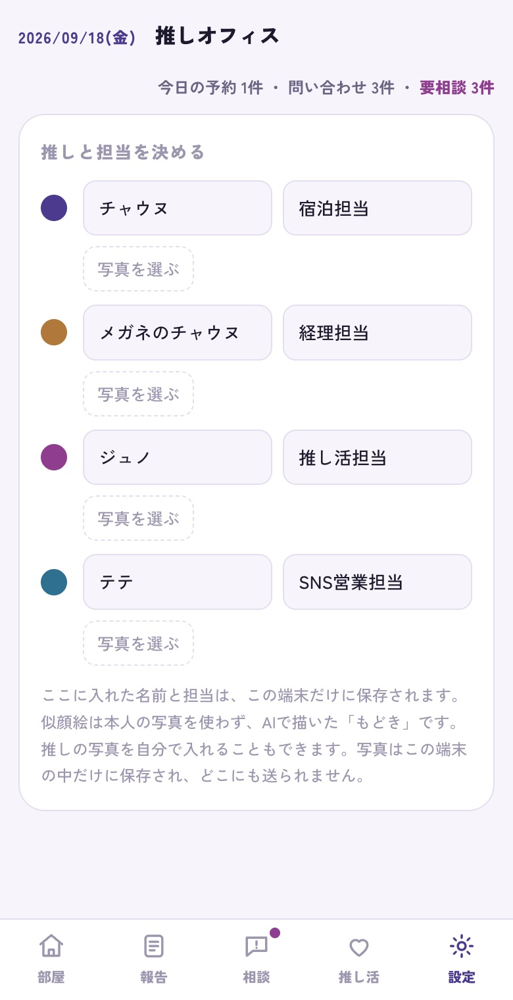

推しオフィス
2026年9月14日、能登からの帰りの車内で出た話を、そのまま形にしました。
4人の推しに担当を割り振って、毎朝その推しから今日の報告を受け取る。それだけの道具です。
試作は claude.ai のリンクです。開くには、送り主（ユウキ）からの共有が要ります。

iPhoneで開いたところ。カードを横にスワイプすると、次の推しの部屋に移ります。
ここに写っている人は、AIで描いた架空の人物です。本物の推しではありません。設定の「写真を選ぶ」から、あなたのカメラロールの写真に入れ替えてはじめて、あなたの推しのオフィスになります。入れた写真はこの端末の中だけに残り、どこにも送られません。
Airbnbのホストで能登をめぐる会（参加9名）の帰り道。金沢へ戻る車の中の93分で出てきた話から生まれました。何かを作ろうとして始まった会話ではありません。
フォルダがチャウヌになってるだけでも全然テンション違う
美穂さん
上司のメッセージは開きたくないけど、推しからのメッセージだったら開く
美穂さん
私みたいな推し活女子は一発でちょろい。経済圏大きいよね
美穂さん
偏った偏愛が、技術とかAIをもっと活かせる
ユウキ
推しを「AI社員」として担当に割り振ります。宿泊の担当、経理の担当、SNS営業の担当、そして推し活そのものの担当。毎朝、その推しから今日の報告が届きます。
レンタルスペースの運営でも、やることの中身は変わりません。変わるのは、画面を開く理由だけです。「やらなきゃ」ではなく「会いたい」から開く。この一点のための道具で、それ以外のことはしません。

パソコンで開くと、4人の部屋が一度に見えます。
送られたリンクを開くだけです。登録も、アプリのダウンロードも要りません。
下の「設定」を開いて、4人ぶんの名前と担当を書き換えます。入れた名前は、この端末の中だけに残ります。

ここがいちばんの中身です。「写真を選ぶ」から、あなたのカメラロールの推しの写真をそのまま入れられます。写真はこの端末の中だけに保存され、どこにも送られません。最初から入っている似顔絵は、AIで描いた架空の人物です。
指で左右に払うと、次の推しの部屋に移ります。下の丸い印が、いま何人目かを示します。
「◯◯に相談する」を押して、そのまま話しかけます。返信文の下書き、支払いの見直し、営業先の条件。担当の推しが答えます。
報告の横の 🔊 を押すと、読み上げます。手が離せないときや、朝の支度をしながらでも聞けます。
Safariの下の共有ボタン（□に↑）から「ホーム画面に追加」を選ぶと、アプリのようにアイコンが並びます。毎朝ここから開けます。
だから、人に配っても問題になりません。この線の引き方そのものが、この道具が商品として成り立つ理由です。
予約が入ったら、推しの名前のLINEから知らせが届きます。
アクリルスタンドの裏にシールを貼って、iPhoneをかざすと推しオフィスが開きます。シールは10枚430円ほどです。
自分の声を録っておいて、報告の読み上げに使えます。いまはユウキの手元で動いているところです。
毎朝6時に届く一枚の新聞。1面が推し活、2面が株。
上の試作はユウキのアカウントの中にあります。相談の返事は、開いた人のClaudeが答える仕組みです。だから、あなたのアカウントの中に同じものを作ってしまうのがいちばん早い道です。作り方の仕様は全部こちらで書いてあるので、あなたがすることは貼ることだけです。GitHubもコマンドも要りません。
claude.ai を開いてログインします。無料の登録でも作れます。
コピーした文章をそのまま入力欄に貼って送ります。あとはClaudeが仕様を読みに行って、あなたのアカウントの中に画面を作ります。
共有ボタン（□に↑）から「ホーム画面に追加」を選ぶと、アプリのようにアイコンが並びます。あとは設定で推しの写真を入れれば、あなたのオフィスです。
文章の最後の（ここに推しの名前を4人ぶん書く）を、あなたの推し4人の名前に書き換えてから送ってください。書き換えは、貼ったあとのClaudeの入力欄でもできます。
うまくいかないときは、ユウキに一言ください。
この2つは claude.ai のリンクです。開くには、送り主（ユウキ）が共有している必要があります。開けないときは、ユウキに一言ください。